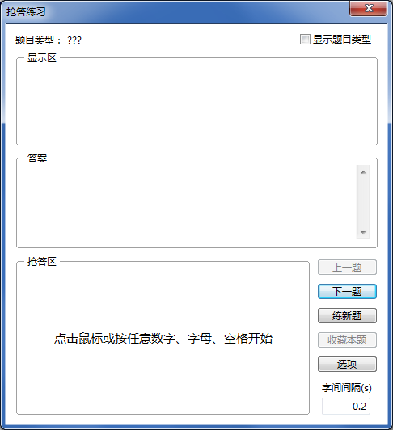
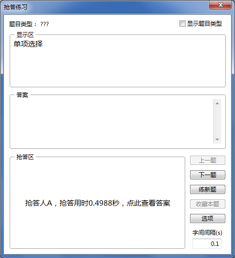
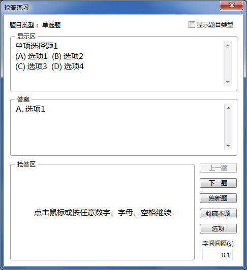
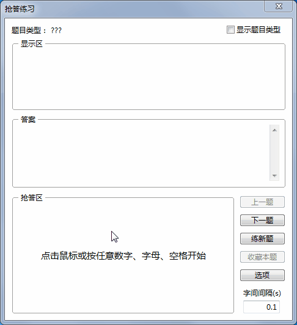

抢答练习
抢答练习
练习抢答，适用于知识竞赛等活动抢答环节的训练，界面如下。

上图所示为每道题目的初始状态。
- 鼠标点击“抢答区”，或按下键盘上的数字键、字母键或空格键，开始抢答，显示区开始按照预设的速度逐字显示题目内容；
- 当显示的内容已经足以确认题目内容及答案了，鼠标点击“抢答区”，或按下键盘上的数字键、字母键或空格键，抢答题目；
抢答练习支持多人抢答，当多人抢答时，可安排每个练习者按不同的数字键或字母键，最终显示结果时将显示按下哪个按键的抢答者抢答成功了；
抢答完成后，将显示抢答成功者及抢答用时。

- 鼠标点击“抢答区”，或按下键盘上的数字键、字母键或空格键，显示完整题目、答案及题目类型。

- 鼠标点击“抢答区”，或按下键盘上的数字键、字母键或空格键，开始下一题。

勾选后，开始抢答前即显示当前题目的类型；若不勾选，则直到最后显示正确答案时才显示。
抢答练习的进程将被记录，执行“练新题”可直接跳至未练习过的题目。
设置抢答练习的题目类型及其他选项，与
学习模式完全相同。
设置抢答时显示区每个字间的显示时间间隔，可设置0.1~2秒，默认0.2秒。
 | 在抢答练习中，题目图片将不能显示。 |
|---|
GX Software 2020-2021
V2.0